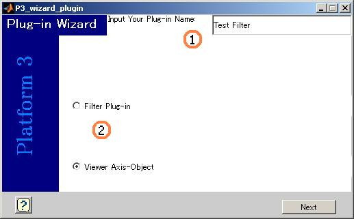

Plugin 作成Wizard |
||||
| 概要 プラグイン選択 | ||||
| プラグインファイル名 プラグイン種類の選択 | ||||
| Page 1 プラグイン選択 | ||||
|
このページでは新規作成するプラグインファイルの概要を設定します. | ||||
| Page1-1 | プラグインファイル名 | |||
| Page1-1 | プラグイン種類の選択 | |||
|
です．

|
||||
|
Platformで表示させるプラグイン名を
(1)に記述します. | ||||
|
プラグインの種類を
(2)のラジオボタンから選択します.
| ||||
| 概要 Top |
|